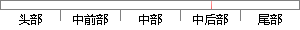

图4-11 start_task()函数
片段位置图

相似结果
相似片段：原子,你程序的start_task()这个函数怎么理解? 发表人内容 2014/05/26 23:23 [Down] [Up] [楼主位] 颜渊 [加为好友] 等级: NO 注册时间:2014/05/21...
| 标题 | 《原子,你程序的start_task()这个函数怎么理解? - STM32-F3/F4专区 ...》 |
| 对比库 | PaperRater云论文库 |
| 网址 | http://www.openedv.com/posts/list/33559.htm |
| 相似率 | 75% （轻度抄袭） |